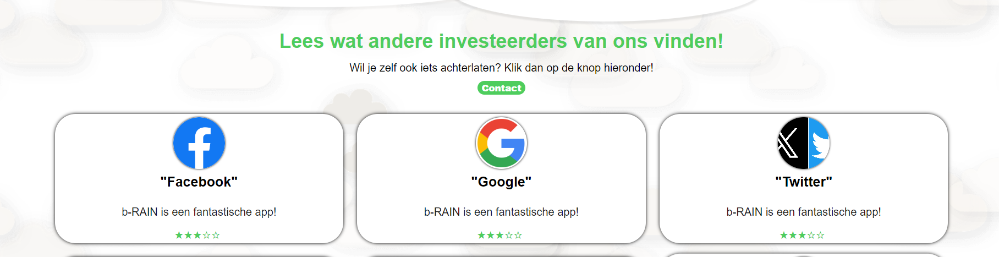

Header

Wel doen
Wolken aanmaken met divs, en goed kijken naar responsive.
Ook kijken dat de kleuren overheen komen met de website.
Kijk naar de hovers en animaties, zorg dat deze gelijk staan.
Niet doen
Niet de css aanpassen van de header zelf: stikcy position, z index.
<header>
<section class="header_full">
<div class="cloud c1"></div>
<div class="cloud c2"></div>
<div class="cloud c3"></div>
<div class="cloud c4"></div>
<h1> b-RAIN </h1>
<nav class="hidden">
<ul>
<li>
<a href="#"> Home </a>
</li>
<li>
<a href="#"> Artikelen</a>
</li>
<li>
<a href="#"> Over ons</a>
</li>
<li>
<a href="#"> Contact</a>
</li>
</ul>
</nav>
<button class="hamburger"> ≡</button>
</section>
</header>
<header styling>s
</header>
header{
background-color: var(--white);
position: sticky;
top: 0;
z-index: 99;
box-shadow: 0 0 10px rgba(0, 0, 0, 0.1);
}
.header_full{
margin: 0 auto;
padding: 2em 1em;
max-width: 1232px;
display: flex;
flex-direction: row;
justify-content: space-between;
align-items: center;
gap: 6em;
}
Hero

Wel doen
images naast de tekst balk zetten en ze responsive maken
Zorg dat je voor desktop de goeie aantal rows en columns gebruikt en voor mobile alles netjes onder elkaar staan
Niet doen
bij heros met tekst balken is het belangrijk om grid te gebruiken dus niet flex
<section class="general">
<h2>Welkom bij Be-RAIN</h2>
<h3>De Toekomst van water</h3>
<section class="generaltext">
<div>
<p>
<p id="line">-</p>
</p>
<p id="moreWelcome">
</p>
≪/div>
<div>
<button id="more" class="readmore"
onclick="leesmeer1()">lees verder</button>
</div>
</section>
</section>
<img src="assets/img/app.png">
|CSS|
.articleparent{
grid-template-columns: 1fr 1fr 1fr 1fr;
grid-template-rows: 1fr 1fr;
display: grid;
gap: 4em;
padding: 0px 60px;
}
Tijdlijn
Wel doen
Een container maken die de tijdlijn met de rest van de site onderscheidt zodat de focus op de tijdlijn ligt. alle elementen in verschillende divs doen zodat deze appart aangepast kunnen worden.
Niet doen
niet te klein maken de focus moet op de tijlijn liggen
<tijdlijn>
<h1>Zo maak je een tijdlijn</h1>
</tijdlijn>
<section class="wrapper">
<div class="timelinebox">
<section class="timeline">
<!--Timeline-->
<section class="timelinecontainer left">
<section class="content">
<h2>Slimme Technologie</h2>
<p>b-RAIN is de manier om zo optimaal
mogelijk om te gaan met de
neerslag rondom je huis. Met slimme technologie,
gebaseerd op weersvoorspellingen
, regelt ons product automatisch de hoeveelheid water in de
regenton, zodat je altijd het meeste uit je waterreservoir
haalt zonder er tijd aan kwijt te zijn.</p>
<a href="">
<button class="secondary">
Contact</button>
</a>
</section>
</section>
<section class="timelinecontainer right">
<section class="content">
<h2>Regenton</h2>
<p>tekst</p>
<a href="">
<button class="secondary">
Contact</button>
</a>
</section>
</section>
<section class="timelinecontainer left">
<section class="content">
<h2>Droogte</h2>
<p>Tekst</p>
<a href="">
<button class="secondary">
Contact</button>
</a>
</section>
</section>
</section>
</div>
</section>
Article
Wel doen
Goed kijken naar responsive. Zorg voor duidelijkheid in de namen.
Ook kijken dat de kleuren overheen komen met de gehele website. Zorg ervoor dat de artikelen ten alle tijden leesbaar zijn
Niet doen
<article>
<h1>Zo maak je een article</h1>
</article>
div class="article-container">
section class="article-box">
div class="article-details">
img src="https://upload.wikimedia.org/wikipedia/
commons/thumb/5/51/Facebook_f_logo_%282019%29.svg/
1200px-Facebook_f_logo_%282019%29.svg.png"alt="Bedrijf 3
Afbeelding"
class=" article-img">
h2>"Facebook"
p>b-RAIN is een fantastische app!
div class="rating-star"> ★★★☆☆
/div>
.article-container {
display: flex;
flex-wrap: wrap;
justify-content: space-between;
padding: 0 100px 100px 100px;
}
.article-box {
flex: 0 0 calc(33.33% - 20px);
background-color: var(--white);
box-shadow: 0 0 5px var(--black);
border-radius: 30px;
margin: 10px;
cursor: pointer;
overflow: hidden;
transition: transform 0.3s ease-in-out;
text-align: center;
}
.article-details h2 {
font-size: 20px;
margin-bottom: 10px;
color: var(--black);
}
.article-details p {
font-size: 16px;
line-height: 1.5;
margin-bottom: 10px;
color: var(--darkgrey)
}
.rating {
display: flex;
align-items: center;
}
.rating-star {
color: var(--green);
margin-right: 5px;
}
.article-img {
width: 75px;
height: 75px;
margin-top: 5px;
border-radius: 50%; /* Create a perfect circle */
object-fit: cover; /* Maintain aspect ratio */
box-shadow: 0 0 3px;
}
footer Cloud

Wel doen
Voor de footer wordt er net als bij de header/navabar worden er 4 divs gemaakt met classes deze divs creeren wolken aan de hand van de styling van de css
Niet doen
Vertel hoe dingen vooral niet toegepast moeten worden.
<header>
<h1>Zo maak je een header</h1>
</header>
footer{
width: 100%;
background-color: var(--darkblue);
color: white;
position: sticky;
bottom: 0%;
z-index: 99;
}
.Gcloud{
margin-top: -40px;
position: absolute;
background-color: var(--white);
}
.A1{
height: 50px;
width: 40%;
left: -50px;
border-radius: 80%;
box-shadow: 5px 4px 2px rgba(0, 0, 0, 0.08);
}
.A2{
height: 95px;
width: 30%;
left: 45%;
border-radius: 60%;
box-shadow: 0 4px 2px rgba(0, 0, 0, 0.08);
}
.A3{
height: 60px;
width:30%;
right: 0;
border-radius: 100%;
box-shadow: 8px 4px 2px rgba(0, 0, 0, 0.04);
}
.A4{
height: 74px;
width: 35%;
right: 50%;
border-radius: 100%;
box-shadow: 6px 4px 2px rgba(0, 0, 0, 0.04);
}
Footer Bottom
Wel doen
Voor de footer-bottom is er een 5 de div met een class waarbij er een donker blauwe footer wordt toegevoegd onder aan de wolken. Met een h1 met de inhoud B-Rain.
Niet doen
Vertel hoe dingen vooral niet toegepast moeten worden.
<header>
<h1>Zo maak je een header</h1>
</header>
.bottom-footer{
max-width: 1231px !important;
margin: 0 auto;
padding: 1em 4em;
height: 140px;
display: flex;
align-items: center;
}